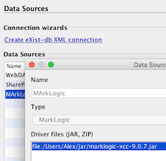
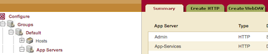
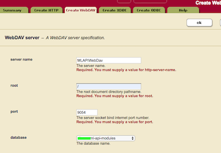
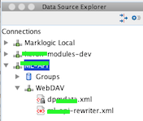

Das Jar sollte an einem soliden Ort abgespeichert werden, da hier nur ein Verweis auf diesen Ort gesetzt wird.
4.2.2
Connector zu Marklogic in Oxygen
Marklogic bietet zwar auf Port 8000 per Default ein Query Console im Browser, mit der man bestimmte Sachen ausprobieren kann.
Komfortabler arbeitet man aber mit einem Oxygen-Connector. Dazu öffnet man den Data Source Explorer:
oXygen Data Source Explorer View öffnen

und konfiguriert eine neue Datenquelle:
Neue Datenquelle in oXygen konfigurieren

Dazu muss man den Marklogic Treiber installieren
↗↗
und diesen im folgenden Screen verfügbar machen.
CAUTION
Marklogic Treiber auswählen

Natürlich ist auf der Serverseite auch eine Einstellung notwendig. Man wechselt als Admin in den Bereich App Servers und fügt einen neuen WebDAV Server hinzu. Ggf. muss man bei der Auswahl der Datenbank diese noch auf "automatische Directory Erzeugung" umstellen.
Wechseln in die Marklogic App Server Verwaltung

WebDAV in Marklogic konfigurieren

Hat man den WebDAV Server erzeugt und diesem eine bestehende oder neu angelegte Datenbank zugewiesen, dann kann man diese
DB im Konfigurationsdialog der neuen WebDav Connection auswählen.
Konfigurieren der WebDAV Connection Einstellungen in oXygen

Schliesslich hat man im Data Source Explorer in oXygen die neue Verbindung verfügbar und kann gefühlt wie im Dateisystem mit
den Files auf dem Server arbeiten.
oXagen Data Source Explorer zeigt die WebDAV Verzeichnisse auf dem Marklogic Server
